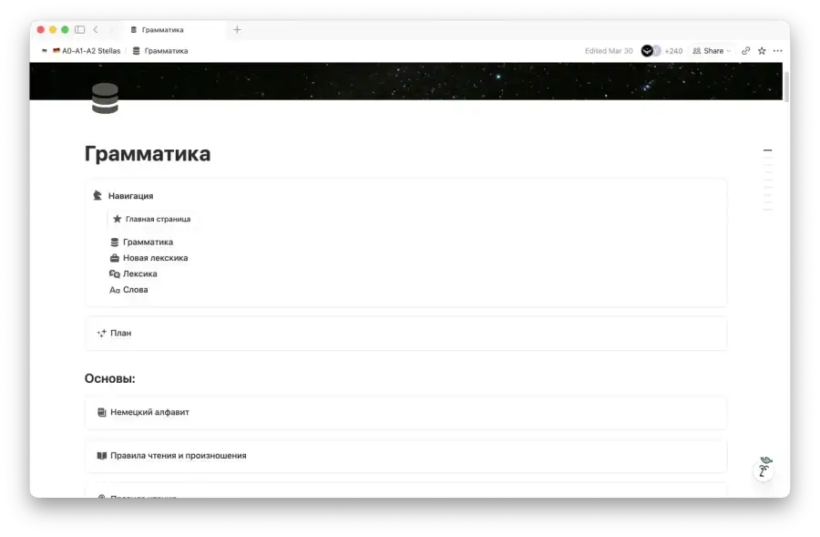
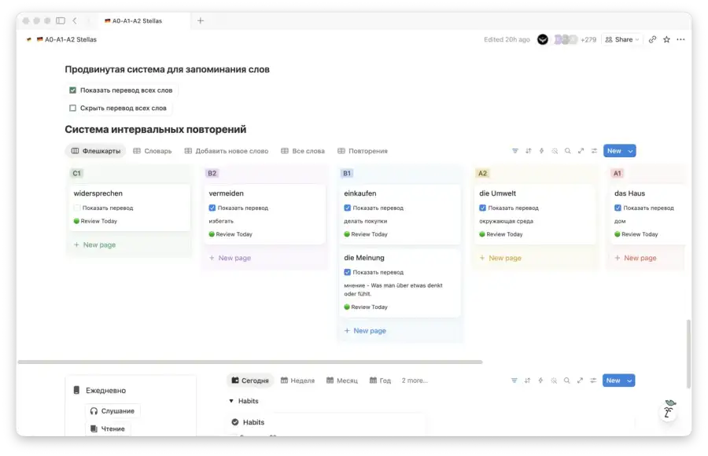
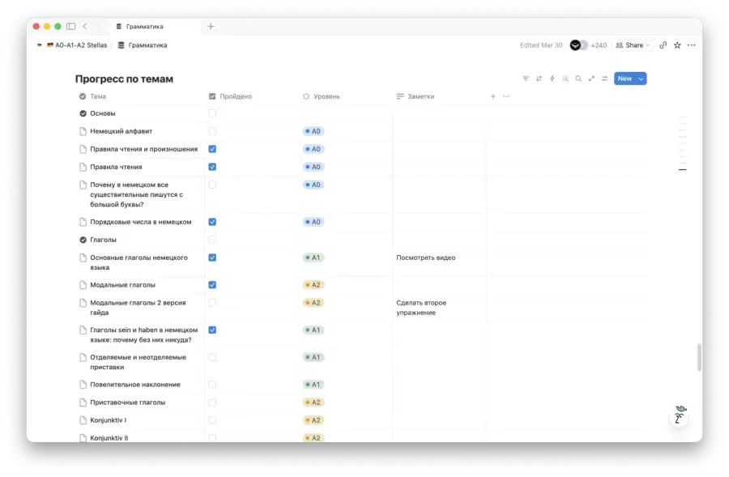
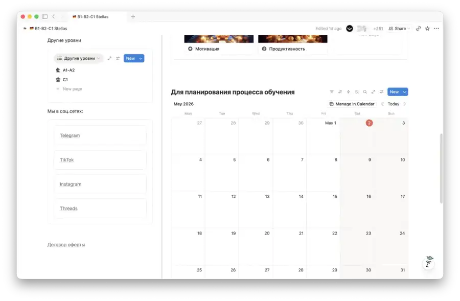

Где слушать немецкий бесплатно
16 ютуб-каналов и подкастов из ролика и 6 бонусом. У каждого примерный уровень, ссылка и совет, как слушать с пользой.
Кодовое слово из ролика: ПОДКАСТ
2 — с текстом
Попробуй Stellas до покупки
Пять настоящих экранов платформы в Notion. Листай и смотри, что делать на каждом: синяя точка показывает, куда нажать.

Экран 1 из 5
Главная уровня A0–A2
Навигация по грамматике и лексике, подборка ресурсов, таймер и заметки.
Что тут делать
- 1Открой «Подкасты» или «Ютуб» в подборке ресурсов
- 2Запусти таймер на время занятия
- 3Отметь план на день в «Заметках»

Экран 2 из 5
Грамматика по порядку
Темы идут по порядку, начиная с раздела «Основы»: алфавит, правила чтения и произношения.
Что тут делать
- 1Начни с «Основ», если учишь с нуля
- 2В каждой теме: объяснение, видео, упражнение и ответы с объяснениями
- 3Переходи между разделами через «Навигацию»

Экран 3 из 5
Интервальные повторения
Карточки слов по уровням от A1 до C1. Перевод открывается по клику.
Что тут делать
- 1Вспомни перевод, потом нажми «Показать перевод»
- 2Повтори карточки с отметкой Review Today
- 3Добавь своё слово через «Добавить новое слово»

Экран 4 из 5
Прогресс по темам
Таблица всех тем уровня: тема, уровень, отметка «Пройдено» и заметки.
Что тут делать
- 1Отметь пройденную тему галочкой
- 2Оставь заметку, например «Сделать второе упражнение»
- 3Смотри по меткам A0, A1, A2, что осталось

Экран 5 из 5
Календарь занятий
Календарь «Для планирования процесса обучения» на главной B1–C1.
Что тут делать
- 1Распиши занятия по дням месяца
- 2Открой «Мотивация» и «Продуктивность», когда нужен толчок
Это экраны платформы A0–C1. Внутри 340+ гайдов, слова с аудио, фильмы, книги и подкасты по уровням.
Как пользоваться списком
- 01
Один канал и один подкаст
Больше двух сразу — и бросишь через неделю. Выбери по уровню.
- 02
10–15 минут в день
Лучше короткий выпуск каждый день, чем сериал раз в неделю.
- 03
Через месяц выше
Понимаешь почти всё — бери источник уровнем выше.
Слушаешь час в день, а понимаешь не больше?
Подкаст играет фоном в дороге и на кухне, но через месяц ты по-прежнему ловишь только отдельные слова. Слух растёт, когда незнакомое разбираешь. В Stellas в Gemini-гайдах настоящие тексты с переводом по клику и слова с аудио: услышал — тут же понял, что это было.
Hast du den Podcast verstanden?Ты понял подкаст?
Na ja… nur einzelne Wörter.Ну… только отдельные слова.
В Stellas: тексты с переводом по клику и слова с аудио в Gemini-гайдах.
Экзамен — тоже внутри
Часть Hören есть в экзаменах Goethe, telc и ÖSD на всех уровнях: подкаст своего уровня — ежедневная тренировка к ней. Формат, типичные ошибки, шаблоны писем и устной части.
- 120гайдов Goethe
- 89гайдов telc и DTZ
- 60гайдов ÖSD
- 40пробных тестов с разбором
- Lesen
- Hören
- Schreiben
- Sprechen
«Мои ошибки» собирают вопросы, где ты ошибся. Повторяешь их перед экзаменом.
Весь немецкий A0–C1 в одном месте
Эта страница — одна тема. В Stellas таких 340+, по порядку от A0 до C1, в твоём Notion.
- 340+ гайдов A0–C1объяснение, видео, упражнение и ответы с объяснениями
- 7500+ слов с аудиои транскрипцией, по темам и ситуациям
- Подготовка к экзаменамGoethe, telc и DTZ, ÖSD: 269 гайдов и 40 пробников
- Офлайн в Notionна телефоне и ноутбуке, без интернета
- Трекер и повторенияфлешкарты, прогресс по темам, календарь
- Обновления бесплатноодин платёж, доступ навсегда
Цена
- A0–A220 €
- B1–C120 €
- A0–C1 обе платформы
40 €30 €
Бонус к A0–C1: раздел A0–A2 на украинском
Один платёж, не подписка. Доступ навсегда, обновления бесплатно.


Частые вопросы
01Это всё бесплатно?
Да, всё из списка можно слушать и смотреть бесплатно. У некоторых подкастов есть платные материалы: это указано на карточке.
02С чего начать на A1?
С Nicos Weg на ютубе и Coffee Break German: медленная речь и объяснения.
03Нужно ли понимать всё?
Нет. Если понимаешь большую часть с первого раза — источник твой. Меньше половины — возьми уровнем ниже.
04А где грамматика и слова?
Грамматика, слова с аудио и материалы по уровням — на платформе Stellas, про неё ниже.